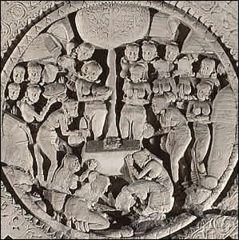

Offering scene
On the morning before Siddhartha reached Enlightenment, a local girl named Sujata brought him a bowl of rice. He divided the rice into forty-nine portions which he then ate. Later that day he achieved Enlightenment. For the next forty-nine days the Buddha did not eat or drink anything as he celebrated attaining Enlightenment. In this scene, a Bodhi Tree is shown above a throne with footprints. This is a symbol of the Buddha. Several women holding bowls and baskets with offerings stand near the tree. One of these women represents Sujata making her offering. |